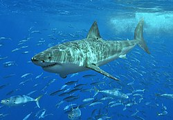

ปลาฉลามขาว

ปลาฉลามขาว มีชื่อวิทยาศาสตร์ว่า Carcharodon carcharias ปลาฉลามขาวอาศัยอยู่ตามแถบทะเลชายฝั่งเกือบทั่วทุกมุมโลก ที่มีอุณหภูมิระหว่าง 12 – 24 องศาเซลเซียส
แต่จะอาศัยอยู่หนาแน่นบริเวณอ่าวประเทศออสเตรเลีย ทางตอนใต้ของทวีปแอฟริกา แคลิฟอเนีย และตอนกลางของทะเลเมดิเตอร์เรเนียน
แต่ที่หนึ่งที่หนาแน่นที่สุดอยู่ที่ ไดร์เออร์ ไอร์แลนด์ (Dyer Island, South Africa) ที่แอฟริกาใต้ ทั้งยังสามารพบได้ในเขตร้อนแถบทะเลเมดิเตอร์เรเนียน
ปลาฉลามขาวเป็นปลาน้ำลึก แต่ที่บันทึกจำนวน ส่วนมากจะมาจากการสำรวจแถบทะเลชายฝั่ง บริเวณที่มีสิงโตทะเล แมวน้ำ โลมาอาศัยอยู่
ได้มีความพยายามที่จะสำรวจในบริเวณน้ำลึก ถึงระดับ 1280 เมตร ผลปรากฏว่าจะพบมากบริเวณผิวน้ำมากกว่า
ลักษณะทั่วไป
ปลาฉลามขาว สืบทอดเผ่าพันธุ์มาจากปลากระดูกอ่อนยุคดึกดำบรรพ์ โดยมีบรรพบุรุษร่วมกับกับปลาฉนาก ปลาโรนัน และปลากระเบน ฉลามขาวยักษ์เมื่อโตเต็มที่อาจยาวอาจมีความยาวถึง 7 เมตร และหนักถึงสามตัน
สีลำตัวด้านหลังออกเป็นสีเทา ส่วนหน้าท้องจะมีสีขาว บริเวณด้านข้างลำตัวใกล้ศีรษะ จะมีแผงเหงือกสำหรับใช้หายใจ
ช่วงชีวิตของฉลามขาวจะมีฟันหลายชุด และเมื่อฟันซี่ใดซี่หนึ่งหัก รากฟันจะฝ่อไป และฟันซี่ใหม่จะงอกขึ้นในเวลาสองสัปดาห์
ทั้งนี้นับเป็นลักษณะเฉพาะสำหรับสัตว์นักล่าที่บางครั้ง อาจต้องล่าสัตว์ที่กระดองแข็งหนาจนทำให้ฟันเกิดความเสียหาย
อาหารและการล่า
ฉลามขาวมักจะโจมตีเหยื่อที่อยู่บริเวณผิวน้ำ และนี่เองเป็นสาเหตุที่ปลาฉลามขาวโจมตีมนุษย์ที่ว่ายน้ำอยู่ เนื่องจากการเคลื่อนไหวของมนุษย์บนผิวน้ำนั้น ทำให้พวกมันเข้าใจว่าเป็นสิงโตทะเลอาหารหลักของมัน
ทุกครั้งที่ฉลามขาวกัดเหยื่อ มันจะปกป้องดวงตาของมันโดยการกลับลูกตาไว้ด้านใน ทำให้เห็นลูกตาเป็นสีดำ ฉลามขาวมีประสาทรับกลิ่นที่ไวมาก ทันทีที่ได้กลิ่นคาวเลือด พวกมันจะมา และโจมตีเหยื่อซึ่งไม่เว้นแม้กระทั่งพวกเดียวกันที่บาดเจ็บ
การสืบพันธุ์
ฉลามเป็นปลาที่มีการปฏิสนธิภายใน นั่นคือ ตัวผู้สอดใส่อวัยวะนำสเปิร์มข้างใดข้างหนึ่ง (clasper) เข้าไปช่องสืบพันธุ์ของตัวเมีย โดยเริ่มแรกพวกมันต้องยึดกันให้ติดก่อน
“ฉลามตัวผู้จะกัดครีบของตัวเมียเอาไว้ เพื่อให้มั่นใจว่า ในขณะผสมพันธุ์จะไม่หลุดออกจากกัน” เบร็นนันบอก ฉลามตัวเมียจะมีผิวหนังที่หนากว่าตัวผู้ ทำให้มันสามารถรับมือกับฟันอันแหลมคมของตัวผู้ได้
นอกจากนี้ ฉลามยังจำเป็นต้องเคลื่อนตัวตลอดเวลาเพื่อการหายใจ ดังนั้น ในขณะเข้าคู่กัน พวกมันจึงเลือกทำกิจกรรมในกระแสน้ำที่แรงพอจะไหลผ่านช่องเหงือก เพื่อป้องกันการขาดอากาศหายใจ